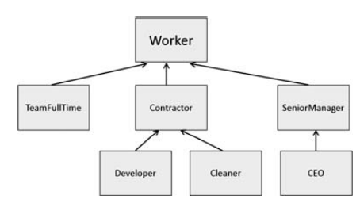

Definition
Object-oriented languages implement reusability of coding structure through inheritance. Inheritance is the second most prominent concept next to encapsulation. It refers to the relationship between classes where one class inherits the entire structure of another class. Inheritance is naturally hierarchical, a tighter relationship than composition and the most highly coupled relationship after friendship.
Hierarchies in the Real World,
For example, the staffing structures in traditional human resource management, with a CEO at the top of the structure, deputies and senior managers beneath that, followed by team leaders and workers. Such structures are useful in making the day to day operations of an organisation manageable. In a retail shop, products are organised and managed in thematic grouping such as hard goods, perishable foods and so on. Such groupings form an integral part of the stock control and checkout management operations. We often use tree diagrams and organograms to capture and visualise these relationships. For example, for the retail shop example:
[ reference ][ other definitions ]
In the context of OO design, we are interested in hierarchies that represent the progressive design of a set of classes. The root of our design is a relatively abstract entity, and we build upon that entity to produce progressively more concrete entities. Considering our previous example closer up
We note that the entity of an Item is relatively abstract in the sense that we could not go into a shop and purchase one. If we said to a member of staff that we “wish to purchase an item”, we would expect the response “which item?”. We can purchase specific, or concrete entities, but not those that are relatively abstract in their conceptualisation. But that does not mean that the higher-level entities have no value. They just serve as base definitions onto which we can build more concrete entities. We say that that the higher-level entities are “parent”, “base” or “super” classes, and the lower-level ones built from them are “child”, "derived" or “sub” classes.
"is-a” relationship
The key idea here is the “is-a” relationship. Looking at our shop example, we see that HardGood is-a Item and that ElectricalGood is-a HardGood and by extension is-a Item. That suggests that, in type terms, ElectricalGood has type ElectricalGood and also has type of HardGood and ultimately Item. This is the kind of hierarchical relationship that Java and other OO programs are designed to capture
Not every real-world hierarchy as we might construe it is suited to this kind of super and sub class analysis. Consider the human resources example referred to earlier. The CEO is the head of the organisation, but does not make much sense as a base class. A senior manager is not also the CEO. A team member is not also a senior manager. So instead of the classic staffing organogram that you might be used to seeing, a more appropriate OO relationship might look something like this:
Such an OO compatible hierarchical relationship is an example of the key OO concept of “polymorphism”.
Derived and Super Classes
In OO design terms we need to consider what attributes and methods a set of classes share. Where we can identify common attributes and methods, we can factorise the design of those classes so that the commonly shared attributes and methods form part of the super class.
We will use an example to help us understand how this works. Consider a shop that sells antiques items, namely vases, statues and paintings. For now we shall consider just some appropriate attributes for our initial OO analysis:
We will make three classes for each of the things that our shop sells. We can see that the classes have some attributes in common, and some that are unique to each class. But we can also see that in reality all three classes are examples of “items” — things that the shop sells. So we can factorise our design with an Item superclass, and then make our three specific classes a sub class of that super class. This is beneficial as it reduces un-necessary code duplication (as well as being a better model of a real-world problem).The super and sub class relationship is represented by an arrow pointing from the sub class towards its super class:

To implement the "is-a" relationship of the above class diagram, we use the keyword "extends"
Assume that, these classes are stored in the same package
In the file Item.java, you type:
public class Item
{
int value;
String creator;
//The below is methods that you need to implement
//default constructor
public Item(){
value=0;
creator="";
}
//constructor with parameters
public Item(int value, String creator){
this.value=value;
this.creator=creator;
}
//getter
//setter
//other logic methods
}
In the file Vase.java, you type:
public class Vase extends Item
{
int height;
String material;
//The below is methods that you need to implement
//constructors
//getter
//setter
//other logic methods
}
public class Statue extends Item
{
int weight;
String colour;
//The below is methods that you need to implement
//constructors
//getter
//setter
//other logic methods
}
public class Painting extends Item
{
int height;
int width;
boolean isWatercolour;
boolean isFramed;
//The below is methods that you need to implement
//constructors
//getter
//setter
//other logic methods
}
The Vase class has a total of four attributes. Two of these are unique to it, and two are “inherited” from its superclass. Similarly, the
Now, you create the file named "AntiqueShop.java", the method main is in here
public class AntiqueShop
{
public static void main(String[] args){
Vase v1 = new Vase();
v1.value = 100;
v1.creator="Test1";
// you can assign values to other attributies of v1
v1.height=100;
v1.material="wood";
// this code only uses to check v1's fields
Statue s1=new Statue();
s1.value=200;
s1.creator="Test2";
// you can assign values to other attributies of s1
s1.weight=100;
s1.colour="blue";
// this code only uses to check s1's fields
Painting p1=new Painting();
p1.value=300;
p1.creator="Test3";
// you can assign values to other attributies of p1
p1.height=200;
p1.width=100;
p1.isWatercolour=true;
p1.isFramed=true;
// this code only uses to check p1's fields
}
}
Functions in Inheritance
We create three objects v1,s1,p1 from three subclasses. These objects have "inherited" attributes
Similarly, we add a method to the super class Item, it is also inherited in three sub classes. we are able to call those inherited methods as if they had been defined in their own class definitions. For example, we add the method "output()" to the Item class.
public class Item
{
public int value;
public String creator;
//The below is methods that you need to implement
//constructors
//getter
//setter
public void output(){
System.out.println("This item is worth " + value + " pounds");
System.out.println("This item is created by " + creator );
}
}
Edit the method main:
public class AntiqueShop
{
public static void main(String[] args){
Vase v1 = new Vase();
v1.value = 100;
v1.creator="Test1";
v1.output();
Statue s1=new Statue();
s1.value=200;
s1.creator="Test2";
s1.output();
Painting p1=new Painting();
p1.value=300;
p1.creator="Test3";
p1.output();
}
}
Objects v1, s1, p1 call the inherited method output.
The output:
This item is worth 100 pounds This item is created by Test1 This item is worth 200 pounds This item is created by Test2 This item is worth 300 pounds This item is created by Test3
Note that, for now, all the attributes and methods have been declared as public. This is not necessarily good OO design practice and we need to apply the principle of encapsulation. This suggests that attributes of super class are protected.
The rules that govern how we can guarantee inheritance are as follows:
protected: attributes and methods that are private and only available from within the class itself and any class extended from it.
public: attributes and methods that are accessible from within the class and from any other class or calling code.
adding constructors
We now know that inheritance allows sub classes to inherit attributes and methods from a super class. We now consider how we should build constructor methods so that instances of our sub classes are created in the most efficient manner.
Consider the constructors is added to the Vase class.
public class Vase extends Item
{
private int height;
private String material;
//The below is methods that you need to implement
public Vase(){
value=0;
creator="";
height=0;
material="";
}
public Vase(int value, String creator, int height, String material){
this.value=value;
this.creator=creator;
this.height=height;
this.material=material;
}
}
Because the Vase class has four fields, you can implement constructors that look like the above. But, that is not efficient coding. It would involve code duplication
To reduce code duplication, common fields are initialized by using constructors of the superclass.
We edit the code of the Vase class as follows:
public class Vase extends Item
{
private int height;
private String material;
//The below is methods that you need to implement
public Vase(){
super(); //call the default constructor of the Item class
height=0;
material="";
}
public Vase(int value, String creator, int height, String material){
super(value, creator); //call the constructor with 2 parameters of the Item class
this.height=height;
this.material=material;
}
}
The super keyword refers to the super class
Similarly, we add constructors to other sub classes
We use the Java keyword super as the qualifier for calling a superclass method: super.methodName(arguments);
for example:
public class Item{
...
void displayDiscount(){ System.out.println("discounting ...");}
}
public class Vase extends Item{
...
@Override
void displayDiscount(){
super.displayDiscount();
System.out.println("and taking ...");
}
public static void main(String[] args){
Vase obj=new Vase();
obj.displayDiscount();
}
}
In a Vase subclass, The "displayDiscount" method has the same signature (name, plus the number and the type of its parameters) and return type as in the superclass. It is called the override the superclass's method. We will learn the override method in the next topic
Whenever we wish to invoke the version of super's methods(for example "displayDiscount") that was defined by our superclass. We use the "super" keyword
The output:
discounting ... and taking ...
Hidden methods: Re-implementing a static method implemented in super class

Using instanceof oprerator
Consider the code in the file AntiqueShop.java:
public class AntiqueShop
{
public static void main(String[] args){
Vase v1 = new Vase(100,"Paris",200,"rock");
Statue s1= new Statue(200,"VN", 1000,"white");
Painting p1=new Painting(300,"USA",2000,1500,true,true);
Item tmp=v1;
}
}
In the above code, we create three objects v1, s1, p1 and initialize values by the constructor with parameters. And then, a reference variable tmp that has the type to be the Item superclass. It is storing the address of object v1. See the figure below:
Similarly, we can use the variable tmp to store the address of objects s1, p1.
How to check the tmp variable is pointing to the address of a specified object?
Using the instanceof keyword. [read more]
Consider the code:
public class AntiqueShop
{
public static void main(String[] args){
Vase v1 = new Vase(100,"Paris",200,"rock");
Statue s1= new Statue(200,"VN", 1000,"white");
Painting p1=new Painting(300,"USA",2000,1500,true,true);
Item tmp=v1;
if(tmp instanceof Vase)
System.out.println("tmp is pointing to the Vase object");
else if(tmp instanceof Statue)
System.out.println("tmp is pointing to the Statue object");
else
System.out.println("tmp is pointing to the Painting object");
}
}
The output:
tmp is pointing to the Vase object
The instanceof operator will return true or false. In the above example, Because the variable tmp is pointing to the Vase object, the instruction "tmp instanceof Vase" returns true.
Casting
Now, we add a method "putFlowers()" to the Vase class
public class Vase extends Item
{
private int height;
private String material;
//The below is methods that you need to implement
public Vase(){
super();
height=0;
material="";
}
public Vase(int value, String creator, int height, String material){
super(value, creator);
this.height=height;
this.material=material;
}
public void putFlowers(){
System.out.println("flowers are put in the vase");
}
}
In the method main, we edit
public class AntiqueShop
{
public static void main(String[] args){
Vase v1 = new Vase(100,"Paris",200,"rock");
Statue s1= new Statue(200,"VN", 1000,"white");
Painting p1=new Painting(300,"USA",2000,1500,true,true);
Item tmp=v1;
if(tmp instanceof Vase){
System.out.println("tmp is pointing to the Vase object");
((Vase)tmp).putFlowers();
}
else if(tmp instanceof Statue)
System.out.println("tmp is pointing to the Statue object");
else
System.out.println("tmp is pointing to the Painting object");
}
}
The tmp variable that has the type of the superclass only calls methods of the superclass. To call methods of the subclass we must cast explicitly. If the code has attempted to cast an object to a subclass of which it is not an instance then a ClassCastException error will be thrown. For example,
...
System.out.println("tmp is pointing to the Vase object");
((Statue)tmp).setColour("Gray"); // causes an error
....
Summary
- Object-oriented languages implement reusability of coding structure through inheritance
- A derived class does not by default inherit the constructor of a super class
- Constructors in an inheritance hierarchy execute in order from the super class to the derived class
- Using the instanceof keyword if we need to check the type of the reference variable.
- Check the type of the reference variable before casting it explicitly.
[ refer to Sage, Kingsley. Concise Guide to Object-Oriented Programming]